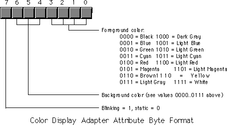

| Table of Content | ||
| CHAPTER
TWENTY THREE: THE PC VIDEO DISPLAY |
||
| 23.1 -
Memory Mapped Video 23.2 - The Video Attribute Byte 23.3 - Programming the Text Display |
Copyright 1996 by Randall Hyde
All rights reserved. Duplication other than for immediate display through a browser is prohibited by U.S. Copyright Law. This material is provided on-line as a beta-test of this text. It is for the personal use of the reader only. If you are interested in using this material as part of a course, please contact rhyde@cs.ucr.edu Supporting software and other materials are available via anonymous ftp from ftp.cs.ucr.edu. See the "/pub/pc/ibmpcdir" directory for details. You may also download the material from "Randall Hyde's Assembly Language Page" at URL: http://webster.ucr.edu Notes: This document does not contain the laboratory exercises, programming assignments, exercises, or chapter summary. These portions were omitted for several reasons: either they wouldn't format properly, they contained hyperlinks that were too much work to resolve, they were under constant revision, or they were not included for security reasons. Such omission should have very little impact on the reader interested in learning this material or evaluating this document. This document was prepared using Harlequin's Web Maker 2.2 and Quadralay's Webworks Publisher. Since HTML does not support the rich formatting options available in Framemaker, this document is only an approximation of the actual chapter from the textbook. If you are absolutely dying to get your hands on a version other than HTML, you might consider having the UCR Printing a Reprographics Department run you off a copy on their Xerox machines. For details, please read the following EMAIL message I received from the Printing and Reprographics Department:
We are currently working on ways to publish this text in a form other than HTML (e.g., Postscript, PDF, Frameviewer, hard copy, etc.). This, however, is a low-priority project. Please do not contact Randall Hyde concerning this effort. When something happens, an announcement will appear on "Randall Hyde's Assembly Language Page." Please visit this WEB site at http://webster.ucr.edu for the latest scoop. Redesigned 10/2000 with "MS FrontPage 98" using
17" monitor 1024x768 |
|
The PC's video display is a very complex system. First, there is not a single common device as exists for the parallel and serial ports, or even a few devices (like the keyboard systems found on PCs). No, there are literally dozens of different display adapter cards available for the PC. Furthermore, each adapter typically supports several different display modes. Given the large number of display modes and uses for the display adapters, it would be very easy to write a book as large as this one on the PC's display adapters alone However, this is not that text. This book would hardly be complete without at least mentioning the PC's video display, but there are not enough pages remaining in this book to do justice to the subject. Therefore, this chapter will discuss the 80 x 25 text display mode that nearly all display adapters support.
Most peripheral devices on the PC use I/O mapped
input/output. A program communicates with I/O mapped devices using the 80x86 in,
out, ins, and outs instructions, accessing devices
in the PC's I/O address space. While the video controller chips that appear on PC video
display adapters also map registers to the PC's I/O space, these cards also employ a
second form of I/O addressing: memory mapped I/O input/output. In particular, the 80 x 25
text display is nothing more than a two dimensional array of words with each word in the
array corresponding a character on the screen. This array appears just above the 640K
point in the PC's memory address space. If you store data into this array using standard
memory addressing instruction (e.g., mov), you will affect the characters
appearing on the display.
There are actually two different arrays you need to worry about. Monochrome system (remember those?) locate their text display starting at location B000:0000 in memory. Color systems locate their text displays at location B800:0000 in memory. These locations are the base addresses of a column major order array declared as follows:
Display: array [0..79, 0..24] of word;
If you prefer to work with row major ordered arrays, no problem, the video display is equal to the following array definition:
Display: array [0..24, 0..79] of word;
Note that location (0,0) is the upper left hand corner and location (79,24) is the lower right hand corner of the display (the values in parentheses are the x and y coordinates, with the x/horizontal coordinate appearing first).
The L.O. byte of each word contains the PC/ASCII code for the character you want to display (see Appendix A for a listing of the PC/ASCII character set). The H.O. byte of each word is the attribute byte. We will return to the attribute byte in the next section.
The display page consumes slightly less than 4 Kilobytes in the memory map. The color display adapters actually provide 32K for text displays and let you select one of eight different displays. Each such display begins on a 4K boundary, at address B800:0, B800:1000, B800:2000, B800:3000, ..., B800:7000. Note that most modern color display adapters actually provide memory from address A000:0 through B000:FFFF (and more), but the text display only uses the 32K from B800:0..B800:7FFF. In this chapter, we will only concern ourselves with the first color display page at address B800:0. However, everything discussed in this chapter applies to the other display pages as well.
The monochrome adapter provides only a single display page. Indeed, the earliest monochrome display adapters included only 4K on-board memory (contrast this with modern high density color display adapters that have up to four megabytes of on-board memory!).
You can address the memory on the video display like ordinary RAM. You could even store program variables, or even code, in this memory. However, it is never a good idea to do this. First of all, any time you write to the display screen, you will wipe out any variables stored in the active display memory. Even if you store such code or variables in an inactive display page (e.g., pages one through seven on a color display adapter), using this memory in this manner is not a good idea because access to the display adapter is very slow. Main memory runs two to ten times faster (depending on the machine).
The video attribute associated with each character on the screen controls underlining, intensity, inverse video, and blinking video on monochrome adapters. It controls blinking and character foreground/background colors on color displays. The following diagrams provide the possible attribute values:


To get reverse video on the color display, simply swap the foreground and background colors. Note that a foreground color of zero with a background color of seven produces black characters on a white background, the standard reverse video colors and the same attribute values you'd use on the monochrome display adapter.
You need to be careful when choosing foreground and background colors for text on a color display adapters. Some combinations are impossible to read (e.g., white characters on a white background). Other colors go together so poorly the text will be extremely difficult to read, if not impossible (how about light green letters on a green background?). You must choose your colors with care!
Blinking characters are great for drawing attention to some important text on the screen (like a warning). However, it is easy to overdo blinking text on the screen. You should never have more than one word or phrase blinking on the screen at one time. Furthermore, you should never leave blinking characters on the screen for any length of time. After a few seconds, replace blinking characters with normal characters to avoid annoying the user of your software.
Keep in mind, you can easily change the attributes of various characters on the screen without affecting the actual text. Remember, the attribute bytes appear at odd addresses in the memory space for the video display. You can easily go in and change these bytes while leaving the character code data alone.
You might ask why anyone would want to bother working directly with the memory mapped display on the PC. After all, DOS, BIOS, and the UCR Standard Library provide much more convenient ways to display text on the screen. Handling new lines (carriage return and line feed) at the end of each line or, worse yet, scrolling the screen when the display is full, is a lot of work. Work that is taken care of for you automatically by the aforementioned routines. Work you have to do yourself if you access screen memory directly. So why bother?
There are two reasons: performance and flexibility. The BIOS video display routines are dreadfully slow. You can easily get a 10 to 100 times performance boost by writing directly to screen memory. For a typical computer science class project, this may not be important, especially if you're running on a fast machine like a 150 MHz Pentium. On the other hand, if you are developing a program that displays and removes several windows or pop-up menus on the screen, the BIOS routines won't cut it.
Although the BIOS int 10h functions provide a large set of video I/O routines, there will be lots of functions you might want to have that the BIOS just doesn't provide. In such cases, going directly to screen memory is one way to solve the problem.
Another difficulty with BIOS routine is that they are not reentrant. You cannot call a BIOS display function from an interrupt service routine, nor can you freely call BIOS from concurrently executing processes. However, by writing your own video service routines, you can easily create a window for each concurrent thread you application is executing. Then each thread can call your routines to display its output independent of the other threads executing on the system.
The AMAZE.ASM program is a good example of a program that directly access the text display by directly storing data into the video display's memory mapped display array. This program access display memory directly because it is more convenient to do so (the screen's display array maps quite nicely to the internal maze array). Simple video games like a space invaders game or a "remove the bricks" game also map nicely to a memory mapped video display.
The following program provides an excellent example of an application that needs to access video memory directly. This program is a screen capture TSR. When you press the left shift key and then the right shift key, this program copies the current screen contents to an internal buffer. When you press the right shift key followed by the left shift key, this program copies its internal buffer to the display screen. Originally, this program was written to capture CodeView screens for the lab manual accompanying this text. There are commercial screen capture programs (e.g., HiJak) that would normally do the job, but are incompatible with CodeView. This short TSR allows one to capture screens in CodeView, quit CodeView, put the CodeView screen back onto the display, and the use a program like HiJak to capture the output.
; GRABSCRN.ASM
;
; A short TSR to capture the current display screen and display it later.
;
; Note that this code does not patch into int 2Fh (multiplex interrupt)
; nor can you remove this code from memory except by rebooting.
; If you want to be able to do these two things (as well as check for
; a previous installation), see the chapter on resident programs. Such
; code was omitted from this program because of length constraints.
;
;
; cseg and EndResident must occur before the standard library segments!
cseg segment para public 'code'
OldInt9 dword ?
ScreenSave byte 4096 dup (?)
cseg ends
; Marker segment, to find the end of the resident section.
EndResident segment para public 'Resident'
EndResident ends
.xlist
include stdlib.a
includelib stdlib.lib
.list
RShiftScan equ 36h
LShiftScan equ 2ah
; Bits for the shift/modifier keys
RShfBit equ 1
LShfBit equ 2
KbdFlags equ <byte ptr ds:[17h]>
byp equ <byte ptr>
; Screen segment address. This value is for color displays only.
; Change to B000h if you want to use this program on a mono display.
ScreenSeg equ 0B800h
cseg segment para public 'code'
assume ds:nothing
; MyInt9- INT 9 ISR. This routine reads the keyboard port to see
; if a shift key scan code just came along. If the right
; shift bit is set in KbdFlags the a left shift key scan
; code comes along, we want to copy the data from our
; internal buffer to the screen's memory. If the left shift
; bit is set and a right shift key scan code comes along,
; we want to copy the screen memory into our local array.
; In any case (including none of the above), we always transfer
; control to the original INT 9 handler.
MyInt9 proc far
push ds
push ax
mov ax, 40h
mov ds, ax
in al, 60h ;Read the keyboard port.
cmp al, RShiftScan ;Right shift just go down?
je DoRight
cmp al, LShiftScan ;How about the left shift?
jne QuitMyInt9
; If this is the left scan code, see if the right shift key is already
; down.
test KbdFlags, RShfBit
je QuitMyInt9 ;Branch if no
; Okay, right shift was down and we just saw left shift, copy our local
; data back to screen memory:
pushf
push es
push cx
push di
push si
mov cx, 2048
mov si, cs
mov ds, si
lea si, ScreenSave
mov di, ScreenSeg
mov es, di
xor di, di
jmp DoMove
; Okay, we just saw the right shift key scan code, see if the left shift
; key is already down. If so, save the current screen data to our local
; array.
DoRight: test KbdFlags, LShfBit
je QuitMyInt9
pushf
push es
push cx
push di
push si
mov cx, 2048
mov ax, cs
mov es, ax
lea di, ScreenSave
mov si, ScreenSeg
mov ds, si
xor si, si
DoMove: cld
rep movsw
pop si
pop di
pop cx
pop es
popf
QuitMyInt9:
pop ax
pop ds
jmp OldInt9
MyInt9 endp
Main proc
assume ds:cseg
mov ax, cseg
mov ds, ax
print
byte "Screen capture TSR",cr,lf
byte "Pressing left shift, then right shift, captures "
byte "the current screen.",cr,lf
byte "Pressing right shift, then left shift, displays "
byte "the last captured screen.",cr,lf
byte 0
; Patch into the INT 9 interrupt vector. Note that the
; statements above have made cseg the current data segment,
; so we can store the old INT 9 value directly into
; the OldInt9 variable.
cli ;Turn off interrupts!
mov ax, 0
mov es, ax
mov ax, es:[9*4]
mov word ptr OldInt9, ax
mov ax, es:[9*4 + 2]
mov word ptr OldInt9+2, ax
mov es:[9*4], offset MyInt9
mov es:[9*4+2], cs
sti ;Okay, ints back on.
; We're hooked up, the only thing that remains is to terminate and
; stay resident.
print
byte "Installed.",cr,lf,0
mov ah, 62h ;Get this program's PSP
int 21h ; value.
mov dx, EndResident ;Compute size of program.
sub dx, bx
mov ax, 3100h ;DOS TSR command.
int 21h
Main endp
cseg ends
sseg segment para stack 'stack'
stk db 1024 dup ("stack ")
sseg ends
zzzzzzseg segment para public 'zzzzzz'
LastBytes db 16 dup (?)
zzzzzzseg ends
end Main
Chapter Twenty Three: The PC Video
Display
29 SEP 1996